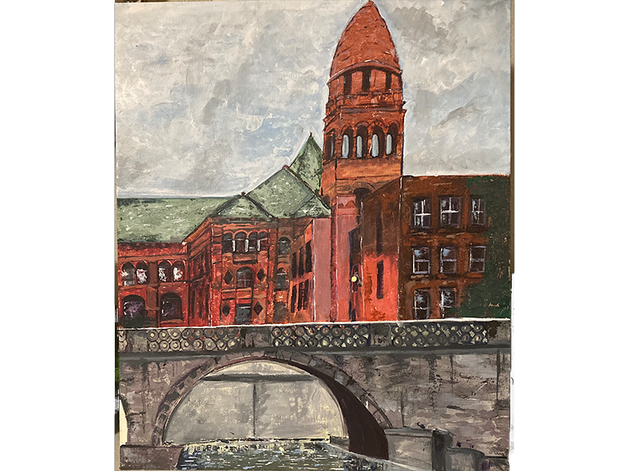

Mara Rene Byrd (b. 2005) is a multimedia artist and designer based in State College Pennsylvania. Byrd's works span from traditional art including painting and charcoal to digital art and animation. Their works have been shown in a number of galleries including the 2023 Colorado Governor's Art Invitational with their digital work Serenade. They're also the recipient of multiple educational awards such as the Thompson Valley Rotary Art Scholarship and the Pennsylvania State University Progressive Scholarship. Byrd's works primarily focus on highlighting the lives of queer people throughout the world. Their art especially attempts to create a platform to have an open discussion of the experiences of transgender people in the modern day. Byrd is currently studying at The Pennsylvania State University pursuing a Bachelors in design in Digital Multimedia Design.